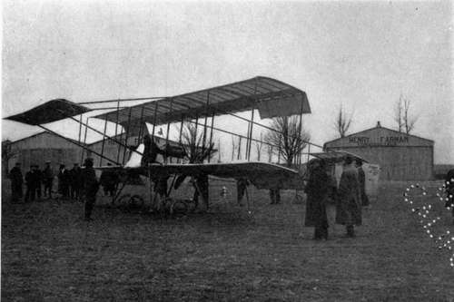
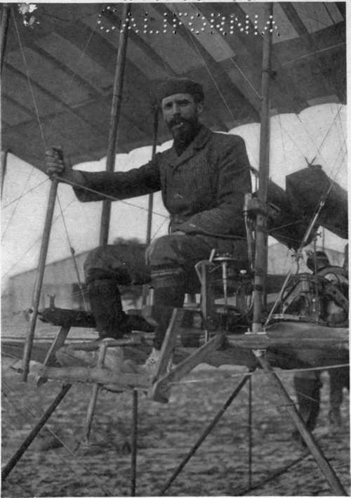
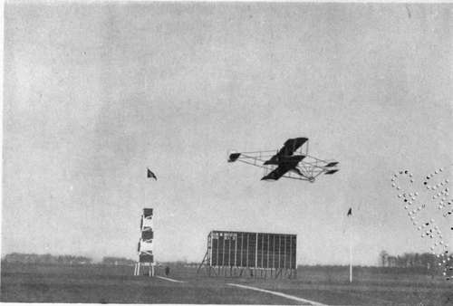
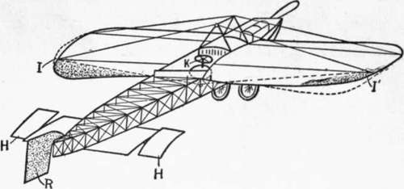
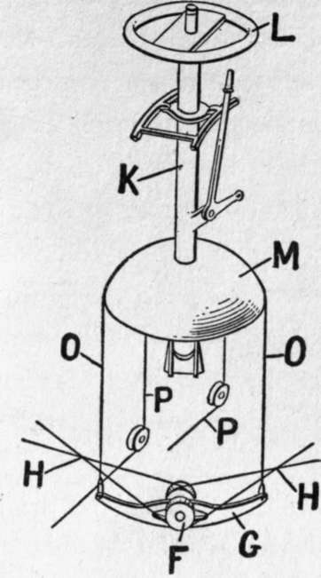
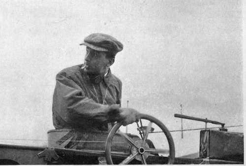
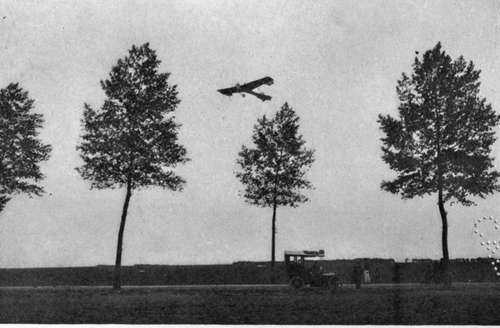

How An Aeroplane Is Balanced. Part 3
Description
This section is from the book "The New Art Of Flying", by Waldemar Kaempffert. Also available from Amazon: The New Art of Flying.
How An Aeroplane Is Balanced. Part 3
Fig. 26. The system of ailerons and rudders devised by Henry Farman for maintaining fore-and-aft and side-to-side balance.
Fig. 27. The Farman biplane. The ailerons are the flaps on the planes, which, as shown in this picture, hang down almost vertically when the machine is at rest.
Photograph by Edwin Levick.
Fig. 28. Henry Farman seated in his biplane. His hand grasps the lever by which the ailerons are operated.
Photograph by Edwin Levick.
In his later machines Mr. Curtiss has provided ailerons similar to those of Farman, as shown in Fig. 29.
Fig. 29. One of the new Curtiss biplanes in flight. The machine is fitted with ailerons similar to those of the Farman machine pictured in Fig. 27.
Photograph by Edwin Levick.
The Blériot monoplane, which is also involved in this Wright litigation, is outwardly at to the opposite rear corner of the plane I' (Fig. 30). By moving the lever K to one side, the cable pulls down the side rear portion of the plane at one tip to a greater angle of incidence than the normal plane of the body of the aeroplane, and permits the opposite side rear portion to rise to an angle of less incidence. Thus the whole plane is warped, and the portions lying at the opposite tips are presented to the air at different angles of incidence. The vertical adjustable rudder R (Fig. 30) is located at some distance to the rear of the main plane, and wires lead from it to a tiller operated by the feet. When the pilot warps the plane he swings the rudder to prevent the machine from spinning. By moving the lever K back and forth the horizontal rudder is rocked up and down.
Fig. 30. The Blériot system of control.
Fig. 31. The steering and control column of the Blériot monoplane.
The wheel L, the post K, and the bell-shaped member M form one piece and move together. Wires O connect the bell with the yoke G, carrying the pulley F, around which the wires H running to the flexible portions of the supporting planes are wrapped. By rocking the post and bell from side to side in a vertical plane the wires H are respectively pulled and relaxed to warp the planes. By moving the post K back and forth the horizontal rudder is operated through the wires P. These various movements of the post can be effected by means of the wheel L, which is clutched by the aviator's hands, or by means of the bell M, which can be clutched by the aviator's feet if necessary.
In the Antoinette monoplane the horizontal or elevation rudder and the stabilising mechanism are quite independent. The vertical rudder consists of two vertical triangular surfaces at the rear. They are moved jointly by means of wire cables running from a tiller worked by the aviator's feet. When this tiller, which moves in a horizontal plane, is turned to the left, the aeroplane will turn to the left. The elevation rudder in the Antoinette monoplane consists of a single triangular horizontal surface placed at the extreme rear. It is governed by cables leading from a wheel placed at the aviator's right hand (Fig. 32). To ascend, the wheel is turned up. This causes a decrease in the inclination of the elevation rudder relatively to the line of flight, and the machine, therefore, rises. Side-to-side balance was at one time maintained by ailerons, as shown in Fig. 33. Latterly it is maintained by warping the outer ends of the main plane very much as in the Wright machine. But the front ends are movable and the rear ends rigid throughout in the new Antoinette, while the opposite is the case in the Wright biplane. The wheel at the aviator's left hand, through cables and a sprocket gear, placed at the lower end of the central mast, controls the warping. For correcting a dip downward on the right the right end of the wing is turned up, and at the same time the left end is turned down, thus restoring balance.
Fig. 32. In the Antoinette monoplane the horizontal or elevating rudder is operated by means of a vertical hand-wheel by the pilot's right hand. The aviator here pictured is Hubert Latham.
Photograph by Edwin Levick.
Fig. 33. The Antoinette monoplane of 1909 in which ailerons were employed to control the machine laterally.
Photograph by Edwin Levick.
Warping a plane and rocking an aileron are not the only ways of maintaining side-to-side balance. The late Professor S. P. Langley discovered that by cutting a plane in two and arranging the two parts so that they would form a rather wide V when viewed from the front or rear (" dihedral angle" is the proper technical term), a certain amount of automatic stability would be obtained. He constructed his own successful small models on that principle. Blériot, too, adopted it in at least one of his earlier machines. Although wasteful of power it is still a conspicuous feature of many French machines of the present day. Even in some recent biplanes, notably the racing Farman, it is to be found.
Continue to:
- prev: How An Aeroplane Is Balanced. Part 2
- Table of Contents
- next: How An Aeroplane Is Balanced. Part 4